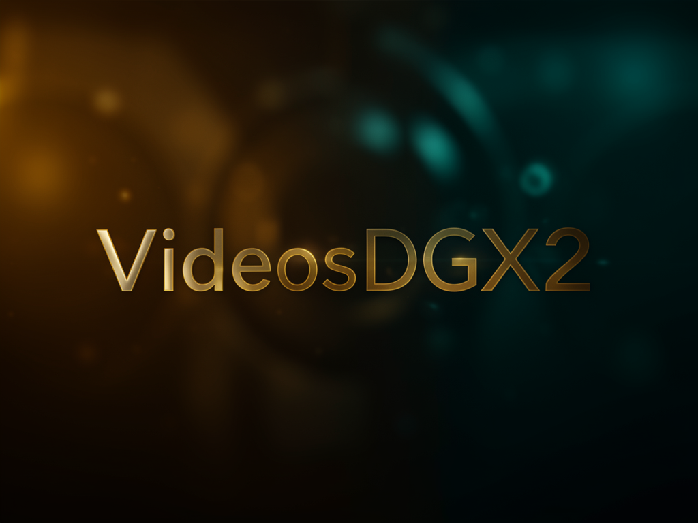

Wan 2.2 rodando no NVIDIA DGX Spark via ComfyUI, com interface web própria e fila de jobs — geração de vídeo por texto ou imagem, direto no hardware, sem custo por chamada de API.

Continuação reorganizada do repositório original VideosDGX (mantido
como backup histórico) — aqui ficou só o que está ativo em produção: ComfyUI + Wan 2.2.
Roda inteiro na GPU Blackwell GB10 do DGX Spark (128 GB de memória unificada, ~1 PFLOP FP4) — sem enviar prompt nem receber vídeo de nenhuma API externa.
Dois modelos ativos: o 5B rápido (texto-para-vídeo e imagem-para-vídeo) e o 14B MoE dual-expert pra qualidade máxima em T2V.
Interface web própria (FastAPI) na porta 7862 com fila, cancelamento, presets por modelo e galeria dos vídeos gerados — além dos geradores em linha de comando.
A interface web (ou os scripts CLI) montam o workflow e submetem ao ComfyUI, que roda a inferência na GPU e devolve o vídeo pronto.
| Modelo | VRAM | Uso |
|---|---|---|
| Wan 2.2 14B MoE | ~90 GB | Qualidade máxima (dual-expert), T2V |
| Wan 2.2 5B | ~25 GB | Rápido, T2V + I2V |
| Endpoint | Método |
|---|---|
/api/generate | POST — enfileira job |
/api/jobs | GET — fila + progresso |
/api/cancel/{job_id} | POST — cancela job |
/api/all-videos | GET — galeria |
Feito sob medida pro NVIDIA DGX Spark 2026 (GB10 Blackwell, 128 GB unificados). Os pesos dos modelos (~50 GB) não ficam no git.
venv comfyui-env com o
ComfyUI oficial NVIDIA e as dependências da interface web.
# ativar o venv source comfyui-env/bin/activate pip install -r requirements.txt
Wan 2.2 (14B e 5B) + text encoder UMT5
+ VAE em ComfyUI/models/ — baixados à parte, ignorados pelo git.
# passo a passo completo cat doc/GUIA_COMPLETO_DO_ZERO.md
Sobe junto com a interface web, ou manualmente antes se preferir.
# manual, se precisar python3 ComfyUI/main.py --listen 0.0.0.0 --highvram
Dois caminhos: a interface web (fila de jobs, presets, galeria) ou os scripts CLI direto no terminal.
Sobe o ComfyUI (se não estiver rodando) e a interface web na porta 7862.
./iniciar_interface_web.sh # http://localhost:7862 (ComfyUI em :8188)
De outra máquina na rede, descubra o IP do DGX e abra a porta 7862 no firewall se precisar.
hostname -I # pega o IP do DGX # depois: http://<IP>:7862
Rápido, ideal pra iterar em prompts.
python3 gerar_video_wan22_5b.py "um gato astronauta flutuando na ISS" \
--width 1280 --height 720 --frames 33 --fps 24 --cfg 6.0 --seed -1
Dual-expert, mais lento, resultado superior. Máximo 81 frames (acima disso aparecem artefatos).
python3 gerar_video_wan22_14b.py "cidade cyberpunk à noite, chuva, neon" \
--width 1280 --height 704 --frames 81 --steps 30 --split-step 15
Anima uma imagem inicial a partir de um prompt de movimento.
python3 gerar_video_wan22_5b_i2v.py "a câmera afasta lentamente" --help
Fórmula recomendada e restrição de resolução dos modelos Wan 2.2.
# fórmula [SUJEITO] + [AÇÃO] + [CENÁRIO] + [ESTILO] + [QUALIDADE] # largura/altura sempre múltiplos de 32
O stack ativo hoje é ComfyUI + Wan 2.2. O LTX-2.3 é um add-on documentado, ainda não instalado por padrão.
inematds/VideosDGX./api/jobs, estado persistido em /tmp/dgx_jobs_v4_2.json.